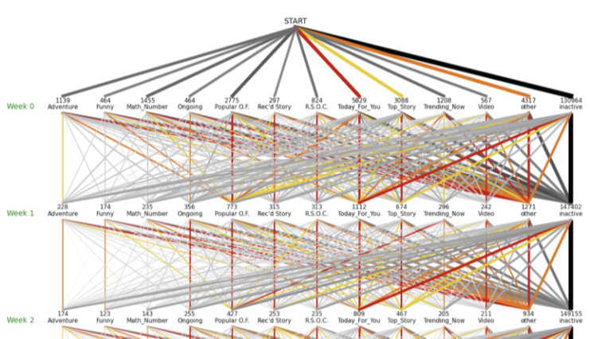

The Story View / Hide #
Click "View" to read about my feelings about this internship, as well as what I learned from it.

PyTorch, sklearnA recommendation system (recsys) serves one purpose: help users discover the items they want. For example, finding 20 videos that a user may be interested in, out of billions of videos on YouTube.
The recsys research community is closely tied to that of ads, search ranking, information retrieval, and other fields in AI.
There are two basic methods for recsys. In simple words:

image source: Data Flair
I needed to implement a recommendation system for an app named Freadom, and design experiments to test its performance.
Freadom is an English-learning app based in India. It provides thousands of "stories" on its platform; children read stories on the app, and their English skills get improved.

Freadom app logo and iOS screenshot
Specifically, I needed to design algorithms that recommend stories to users, for 2 different sections:
For "Today For You", I implemented or tried various flavors of Matrix Factorization. I tuned the algorithm with different hyperparameters, and tried applying filters to the training data to see if this can facilitate training.
For "Similar Stories", I used word2vec
to construct an embedding for each story, based on their text features
(category, description, contents). I then used cosine similarity
to find a nearest story as recommendation.
I ran dozens of experiments to calculate the error of my Matrix Factorization algorithm under various conditions. I achieved best (lowest) error of 0.342 on the internal test set, against the baseline of 0.372.
Technical details: For each user-item pair, a recommendation algorithm predicts the utility score that the user gets when interacting with this item. For example, if a user clicks on a given story, the utility score for this user-item pair is 1, otherwise it's 0. The error is then calculated by taking the RMSE (Root Mean Squared Error) between the predicted utilities and the true values, for some pairs of user-item interactions.
Click "View" to read about other topics I explored in the research assistantship: (1) evaluation metrics; (2) cold start problem; (3) data visualization.
As mentioned above, the performance of our algorithm is calculated by taking RMSE between the predicted and actual utilities. RMSE has a lot of limitations, so I explored alternate performance metrics.
Instead of predicting utilities on a continuous scale, I could frame the problem as a classification problem, classifying each user-item pair as "user likes it" or "user does not like it". Using binary classification opens up new metrics such as precison/recall, cross-entropy, AUC, and so on. I discussed the pros and cons of using prediction VS classification.
Both RMSE and classification-based metrics do not directly measure the quality of our ranking. This is a problem, since a recommendation system is essentially a ranking algorithm, where for each user, we want to rank all items in order of his/her preference. To this end, I and my mentor proposed using precision@k, inspired by relevant research in ads and search, and we defined how to calculate it in the context of our project.
In the end, no metric can truly capture the quality of a recsys. There are subjective things like "serendipity" (recommending outside of categories that the user has liked) that is important in a real-world environment.
Finally, note that I did all my experiments offline, i.e. without interacting with actual users; online A/B testing is outside the scope of my research project.
When using Collaborative Filtering, the success of a recsys depends on the historical data of how users interacted with items. For new users, there is no historical data yet—how do we recommend items to those new users? This is the so-called cold-start problem.
One way to solve this is to use Content Filtering for new users, since (some versions of) content filtering does not need past interaction data. But at what point—i.e. after obtaining how much data for this user—do we switch from content filtering to collaborative filtering for recommendation?
To answer this question, I and my mentor designed experiments to test the performance of these two algorithms when given different amounts of data. To my knowledge, there hasn't been previous academic research on this topic using our method.
However, in the end, I didn't find the experiments convincing enough, partly because the output format of the two algorithms were fundamentally different, and it was awkward to compare their performance against each other. In particular, content filtering is not designed to produce utility scores as collaborative filtering does.
The Freadom App consists of different sections such as
"Today For You",
"Trending Now", and so on.
I used matplotlib to visualize how users' favorite sections changed over time,
starting from when they first signed up for the app:

Evolution of users' favorite sections
Click "View" to read about my feelings about this internship, as well as what I learned from it.